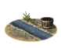
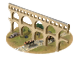
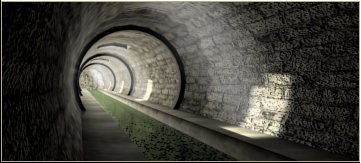
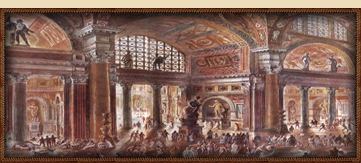
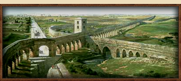
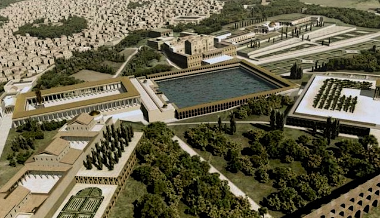

RTR: Imperium Surrectum
RTR: Imperium SurrectumSanitation
5 levels, each replacing the one before it — you upgrade in place rather than building alongside.
Cisterns (Sanitation) → Sewers (Sanitation) → Public Baths (Sanitation) → Aqueduct (Sanitation) → Great Bathhouse (Sanitation)
Levels at a glance
| Level | Cost | Build time | Minimum settlement | Upgrades to | Level | Cost | Build time | Minimum settlement | Upgrades to | ||
|---|---|---|---|---|---|---|---|---|---|---|---|
| Cisterns (Sanitation) | 1,500 | 3 | town | Sewers (Sanitation) |  | Sewers (Sanitation) | 4,500 | 6 | large town | Public Baths (Sanitation) | |
| Public Baths (Sanitation) | 7,500 | 9 | city | Aqueduct (Sanitation) |  | Aqueduct (Sanitation) | 12,000 | 14 | large city | Great Bathhouse (Sanitation) | |
| Great Bathhouse (Sanitation) | 15,000 | 16 | huge city | — |
Costs in denarii, build time in turns.
Cisterns (Sanitation)

Cisterns to collect and hold drinking water for later use.
Clean, or at least clean-ish, drinking water is the primary requirement for human survival and therefore for civilization. In areas where it rains infrequently it is no more than prudent to dig some large reservoirs and wall them up. In these cisterns we can collect and hold what water is available against the proverbial rainy day, which would in this case mean a dry one. If the cisterns are well constructed and protected from contamination many diseases can be easily prevented.
Wording varies by culture: 3 versions of this description exist in the game files.
| Cost | 1,500 denarii | Build time | 3 turns | Minimum settlement | town | Upgrades to | Sewers (Sanitation) |
Requirements — all of these must hold before this level can be built.
- Local Market at Local Barter or above is built here
- the region does not have the hidden resource
nobuild(nobuilding) - no building tagged
sanitationis built or queued here (no_other_sanitation) - Government Building
Show the condition as the game files write it
building_present_min_level market trader and nobuilding and no_other_sanitation and requires_gov
What it does
- +1 population health
- taxable income -5 to -1, scaling with settlement size (player only)
Show 13 effects that apply only in the circumstances shown
- -1 taxable income — only when
size1 and building_present_min_level health sewers and not is_player - -1 taxable income — only when
size2 and building_present_min_level health sewers and not is_player - -2 taxable income — only when
size3 and building_present_min_level health sewers and not is_player - -2 taxable income — only when
size4 and building_present_min_level health sewers and not is_player - -3 taxable income — only when
size5 and building_present_min_level health sewers and not is_player - -3 taxable income — only when
size6 and building_present_min_level health sewers and not is_player - -4 taxable income — only when
size7 and building_present_min_level health sewers and not is_player - -4 taxable income — only when
size8 and building_present_min_level health sewers and not is_player - -5 taxable income — only when
size9 and building_present_min_level health sewers and not is_player - -5 taxable income — only when
size10 and building_present_min_level health sewers and not is_player - From tier 3 onwards this line will gain +1 health due to local lead or lead supply — only when
baths_sanitation_factions and sanitation_watersource and lead_building_supply - This building cannot be upgraded past tier 2 as the region lacks a reliable water source — only when
not sanitation_watersource and baths_sanitation_factions - This building can be fully upgraded due to a reliable water source present in the region — only when
sanitation_watersource and baths_sanitation_factions
Sewers (Sanitation)

Sewers efficiently wash away the filth and rubbish from a settlement, making the place cleaner. Indeed, one measure of civilization might be the distance between one's nose and the final resting place of one's bowel movements! Sewers therefore help civilization's forward march.
Wording varies by culture: 3 versions of this description exist in the game files.
| Cost | 4,500 denarii | Build time | 6 turns | Minimum settlement | large town | Upgrades to | Public Baths (Sanitation) |
Requirements — all of these must hold before this level can be built.
- Local Market at Local Market or above is built here
- the region does not have the hidden resource
nobuild(nobuilding) - no building tagged
sanitationis built or queued here (no_other_sanitation) - Government Building
- your faction is not one of
libyan, scythian, parni, brittonic, germanic, arab(sewer_sanitation_factions)
Show the condition as the game files write it
building_present_min_level market market and nobuilding and no_other_sanitation and requires_gov and sewer_sanitation_factions
What it does
- +3 population health
- taxable income -7 to -3, scaling with settlement size (player only)
Show 13 effects that apply only in the circumstances shown
- -3 taxable income — only when
size1 and building_present_min_level health sewers and not is_player - -3 taxable income — only when
size2 and building_present_min_level health sewers and not is_player - -4 taxable income — only when
size3 and building_present_min_level health sewers and not is_player - -4 taxable income — only when
size4 and building_present_min_level health sewers and not is_player - -5 taxable income — only when
size5 and building_present_min_level health sewers and not is_player - -5 taxable income — only when
size6 and building_present_min_level health sewers and not is_player - -6 taxable income — only when
size7 and building_present_min_level health sewers and not is_player - -6 taxable income — only when
size8 and building_present_min_level health sewers and not is_player - -7 taxable income — only when
size9 and building_present_min_level health sewers and not is_player - -7 taxable income — only when
size10 and building_present_min_level health sewers and not is_player - From tier 3 onwards this line will gain +1 health due to local lead or lead supply — only when
baths_sanitation_factions and sanitation_watersource and lead_building_supply - This building cannot be upgraded past tier 2 as the region lacks a reliable water source — only when
not sanitation_watersource and baths_sanitation_factions - This building can be fully upgraded due to a reliable water source present in the region — only when
sanitation_watersource and baths_sanitation_factions
Public Baths (Sanitation)

Public baths play an important part in the social life of the town; they are a place to meet as much as somewhere to get clean. They are also a sign of 'Roman-ness'.
Public baths are often among the most magnificent of public buildings, and include cunning heating systems and many slaves to look after the needs of the citizens. They play an important role in public life in the Roman world. Baths are not only a place to get clean, but also a place where a man can socialise with his colleagues, argue about politics and catch up on the local gossip.
Wording varies by culture: 4 versions of this description exist in the game files.
| Cost | 7,500 denarii | Build time | 9 turns | Minimum settlement | city | Upgrades to | Aqueduct (Sanitation) |
Requirements — all of these must hold before this level can be built.
- Local Market at Forum or above is built here
- the region has the hidden resource
irrigation_river— or — the region has the hidden resourceirrigation_lake— or — the region has the hidden resourceirrigation_springs(sanitation_watersource) - the region does not have the hidden resource
nobuild(nobuilding) - Government Building
- your faction is not one of
libyan, scythian, parni, brittonic, germanic, arab, barbarian, iberian, thracian, illyrian, dacian(baths_sanitation_factions)
Show the condition as the game files write it
building_present_min_level market forum and sanitation_watersource and nobuilding and requires_gov and baths_sanitation_factions
What it does
- taxable income -8 to -4, scaling with settlement size (player only)
Show 14 effects that apply only in the circumstances shown
- +4 population health — only when
not lead_building_supply - +5 population health — only when
lead_building_supply - -4 taxable income — only when
size1 and building_present_min_level health baths and not is_player - -4 taxable income — only when
size2 and building_present_min_level health baths and not is_player - -5 taxable income — only when
size3 and building_present_min_level health baths and not is_player - -5 taxable income — only when
size4 and building_present_min_level health baths and not is_player - -6 taxable income — only when
size5 and building_present_min_level health baths and not is_player - -6 taxable income — only when
size6 and building_present_min_level health baths and not is_player - -7 taxable income — only when
size7 and building_present_min_level health baths and not is_player - -7 taxable income — only when
size8 and building_present_min_level health baths and not is_player - -8 taxable income — only when
size9 and building_present_min_level health baths and not is_player - -8 taxable income — only when
size10 and building_present_min_level health baths and not is_player - This includes +1 health (0.5 growth & 5 public order) due to lead — only when
lead_building_supply - This building can be fully upgraded due to a reliable water source present in the region — only when
sanitation_watersource
Religious belief — spreads 1 belief, by how much depending on what the region already believes.
- Italic +2
Aqueduct (Sanitation)

What have the Romans ever done for us? This, that's what.
The aqueduct supplies fresh, clean water to the city throughout the year. Apart from that used for drinking and washing, there is usually enough left over for public fountains and gardens as well.
Wording varies by culture: 3 versions of this description exist in the game files.
| Cost | 12,000 denarii | Build time | 14 turns | Minimum settlement | large city | Upgrades to | Great Bathhouse (Sanitation) |
Requirements — all of these must hold before this level can be built.
- the region has the hidden resource
irrigation_river— or — the region has the hidden resourceirrigation_lake— or — the region has the hidden resourceirrigation_springs(sanitation_watersource) - Local Market at Forum or above is built here
- the region does not have the hidden resource
nobuild(nobuilding) - Government Building
- your faction is not one of 13 factions, listed in the condition below (
aquaduct_sanitation_factions)
Show the condition as the game files write it
sanitation_watersource and building_present_min_level market forum and nobuilding and requires_gov and aquaduct_sanitation_factions
What it does
- taxable income -10 to -6, scaling with settlement size (player only)
Show 14 effects that apply only in the circumstances shown
- +6 population health — only when
not lead_building_supply - +7 population health — only when
lead_building_supply - -6 taxable income — only when
size1 and building_present_min_level health aqueduct and not is_player - -6 taxable income — only when
size2 and building_present_min_level health aqueduct and not is_player - -7 taxable income — only when
size3 and building_present_min_level health aqueduct and not is_player - -7 taxable income — only when
size4 and building_present_min_level health aqueduct and not is_player - -8 taxable income — only when
size5 and building_present_min_level health aqueduct and not is_player - -8 taxable income — only when
size6 and building_present_min_level health aqueduct and not is_player - -9 taxable income — only when
size7 and building_present_min_level health aqueduct and not is_player - -9 taxable income — only when
size8 and building_present_min_level health aqueduct and not is_player - -10 taxable income — only when
size9 and building_present_min_level health aqueduct and not is_player - -10 taxable income — only when
size10 and building_present_min_level health aqueduct and not is_player - This includes +1 health (0.5 growth & 5 public order) due to lead — only when
lead_building_supply - This building can be fully upgraded due to a reliable water source present in the region — only when
sanitation_watersource
Religious belief — spreads 1 belief, by how much depending on what the region already believes.
- Italic +2
Great Bathhouse (Sanitation)

A huge bathhouse that forms a linchpin of Roman civilization.
This huge monumental bathhouse is more than a place to get clean. Its a place where the plebs and the patricians mingle. In its marble corridors the regular people can enjoy the benefits of being Roman. It is a place where weighty matters are debated and the business of state actually gets done, and all in the nude! Besides numerous baths of different temperatures and steam rooms the massive complex holds exercise courts, reading rooms, art galleries, gardens and shops. The mechanisms that heat the baths meanwhile are a marvel of Roman engineering. Truly, to be a Roman is to bathe here and to bathe here is to be a Roman.
Wording varies by culture: 2 versions of this description exist in the game files.
| Cost | 15,000 denarii | Build time | 16 turns | Minimum settlement | huge city |
Requirements — all of these must hold before this level can be built.
- your faction is one of
roman - the region has the hidden resource
irrigation_river— or — the region has the hidden resourceirrigation_lake— or — the region has the hidden resourceirrigation_springs(sanitation_watersource) - Local Market at Large Forum or above is built here
- the region does not have the hidden resource
nobuild(nobuilding) - Government Building
- the region has the hidden resource
irrigation_river— or — the region has the hidden resourceirrigation_lake— or — the region has the hidden resourceirrigation_springs(sanitation_watersource)
Show the condition as the game files write it
factions { roman, } and sanitation_watersource and building_present_min_level market great_forum and nobuilding and requires_gov and sanitation_watersource
What it does
- taxable income -8 to -4, scaling with settlement size (player only)
Show 13 effects that apply only in the circumstances shown
- +7 population health — only when
not lead_building_supply - +8 population health — only when
lead_building_supply - -4 taxable income — only when
size1 and building_present_min_level health city_plumbing and not is_player - -4 taxable income — only when
size2 and building_present_min_level health city_plumbing and not is_player - -5 taxable income — only when
size3 and building_present_min_level health city_plumbing and not is_player - -5 taxable income — only when
size4 and building_present_min_level health city_plumbing and not is_player - -6 taxable income — only when
size5 and building_present_min_level health city_plumbing and not is_player - -6 taxable income — only when
size6 and building_present_min_level health city_plumbing and not is_player - -7 taxable income — only when
size7 and building_present_min_level health city_plumbing and not is_player - -7 taxable income — only when
size8 and building_present_min_level health city_plumbing and not is_player - -8 taxable income — only when
size9 and building_present_min_level health city_plumbing and not is_player - -8 taxable income — only when
size10 and building_present_min_level health city_plumbing and not is_player - This includes +1 health (0.5 growth & 5 public order) due to lead — only when
lead_building_supply
Religious belief — spreads 1 belief, by how much depending on what the region already believes.
- Italic +4
What the shorthands in those conditions stand for (19)
| Shorthand | Stands for | Shorthand | Stands for | Shorthand | Stands for | Shorthand | Stands for |
|---|---|---|---|---|---|---|---|
aquaduct_sanitation_factions | not factions { libyan, scythian, parni, brittonic, germanic, arab, barbarian, iberian, thracian, illyrian, dacian, ethiopian, indian, } | baths_sanitation_factions | not factions { libyan, scythian, parni, brittonic, germanic, arab, barbarian, iberian, thracian, illyrian, dacian, } | lead_building_supply | resource lead or hidden_resource lead_supply_built factionwide | no_other_sanitation | no_building_tagged sanitation queued |
nobuilding | not hidden_resource nobuild | requires_gov | building_present governmentA or building_present governmentB or building_present governmentC or building_present governmentD or not is_player | sanitation_watersource | hidden_resource irrigation_river or hidden_resource irrigation_lake or hidden_resource irrigation_springs | sewer_sanitation_factions | not factions { libyan, scythian, parni, brittonic, germanic, arab, } |
size1 | major_event "empire_size1" | size10 | major_event "empire_size10" | size2 | major_event "empire_size2" | size3 | major_event "empire_size3" |
size4 | major_event "empire_size4" | size5 | major_event "empire_size5" | size6 | major_event "empire_size6" | size7 | major_event "empire_size7" |
size8 | major_event "empire_size8" | size9 | major_event "empire_size9" | water | hidden_resource irrigation_river or hidden_resource irrigation_springs or hidden_resource irrigation_lake or hidden_resource irrigation_oasis |